Heute begleiten wir Reto live — vom ersten Klick bis zum Management-Report. Stardust ist das Projekt. Lassen wir ihn machen.
ca. 45–60 Minuten · 18 Szenen · interaktiv
aller Spreadsheets enthalten Fehler. Trotzdem plant jedes dritte Unternehmen damit Ressourcen.
Tools parallel — Excel, Jira, MS Project. Keine Single Source of Truth. Jede Zahl stimmt anders.
der PMs haben keine Echtzeit-KPIs. Sie erfahren erst am Quartalsende, was schiefgelaufen ist.
Reto hatte genau diese Probleme. Dann hat er Tempus entdeckt. Peter glaubt ihm nicht. Noch nicht.
Reto leitet 6 parallele Projekte — und verliert keins davon aus dem Blick. Heute zeigt er, wie.
Ruhig. Datengetrieben. Immer einen Klick voraus.Peter fragt die unbequemen Fragen — genau die, die auch Ihre Kunden stellen werden. Heute wird er überzeugt.
Kritisch. Neugierig. Am Ende: begeistert.„Werden Sie Teil der Geschichte. Stellen Sie Fragen — genau so, wie Peter sie stellen würde."
Peter betritt Retos Bildschirm. Er erwartet eine Folienschlacht. Stattdessen sieht er ein Dashboard — acht Kacheln, jede ein anderes Werkzeug, alle auf denselben Daten.
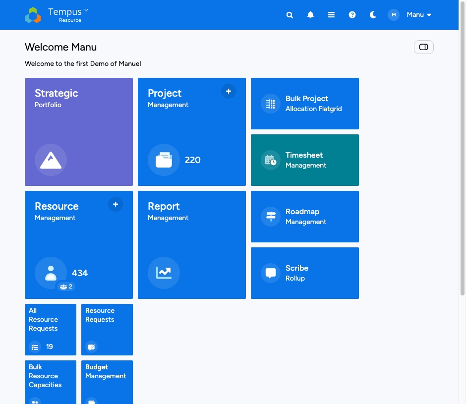
Reto öffnet Project Management. 220 Projekte — Stardust ist dabei. Er klickt auf Create Project. In unter einer Minute existiert der steuerbare Rahmen.
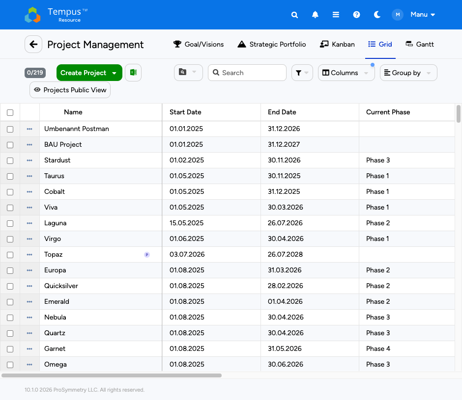
Stardust hat 13 Tasks — von Scoping bis Dokumentation. Reto weist jeder Phase Ressourcen zu. Nicht nur „wer macht mit", sondern wer trägt Verantwortung für was.
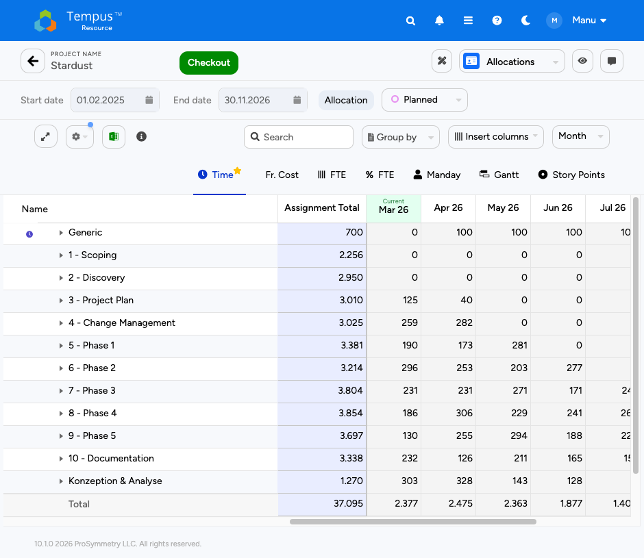
Reto klickt auf Checkout — der Plan ist jetzt exklusiv bearbeitbar. Er ändert Stunden auf Task-Ebene. Dann wechselt er zu Actual: echte Ist-Zahlen aus dem Timesheet.
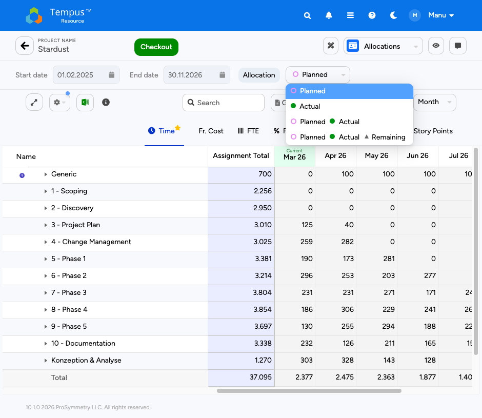
Die häufigste Frage: „Muss ich Stunden doppelt eingeben?" Nein. Tempus synchronisiert automatisch aus dem Timesheet Management. Erfasste Stunden fliessen direkt in die Actual-Werte.
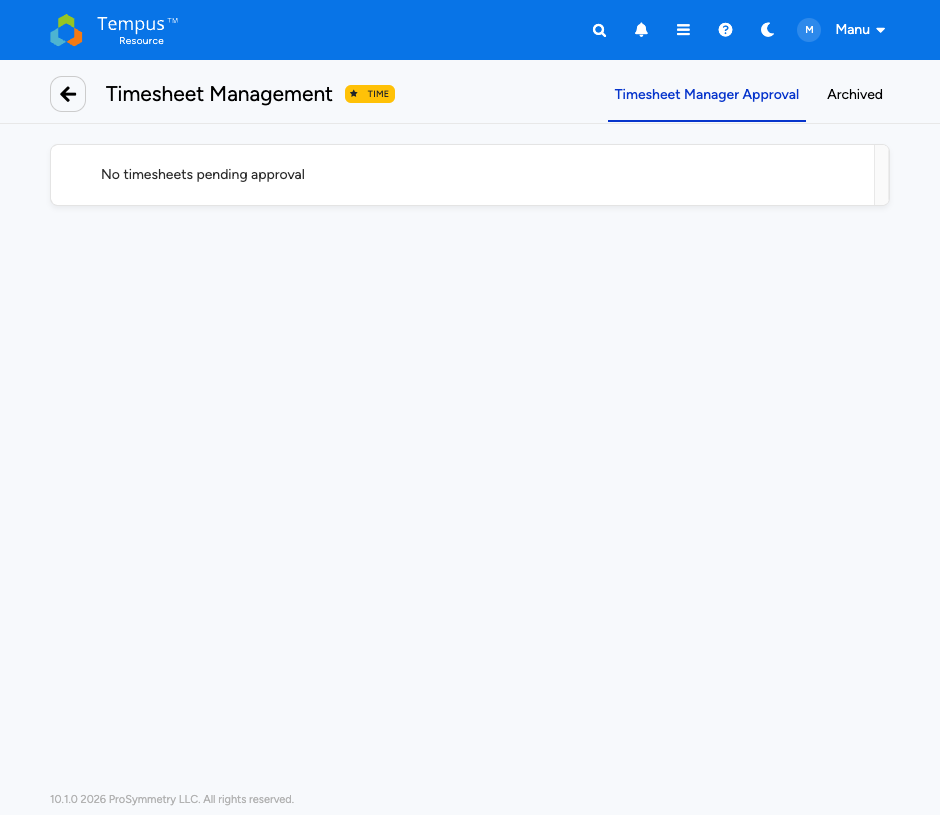
Reto öffnet das Project Allocation Grid vom Dashboard. Default Mode: alle Projekte, alle Ressourcen, alle Zeiträume — ein Screen. Er setzt Start/End und bearbeitet ein Assignment. Nur dieses Assignment wird gesperrt — nicht das ganze Projekt. Andere PMs arbeiten parallel weiter.
Reto wechselt in den Resource Mode und wählt Simon Wespi. Sofort sieht Peter alle Projekte, auf denen Simon eingeplant ist — und dass April/Mai überbucht sind. Eine Person, alle Projekte, ein Blick.
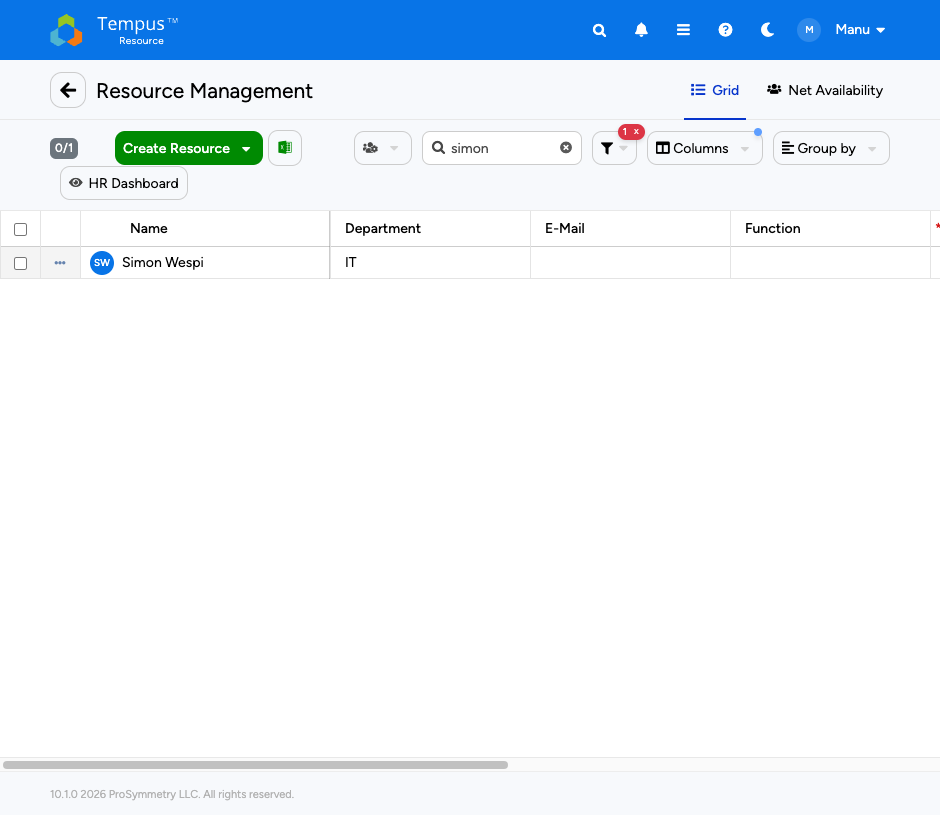
Im Project Mode sieht Reto alle Ressourcen eines Projekts auf einen Blick. Dann wechselt er zur Net Availability: Team-Auslastung pro Monat, prozentual. Überbuchungen werden sofort sichtbar — bevor jemand ausbrennt.
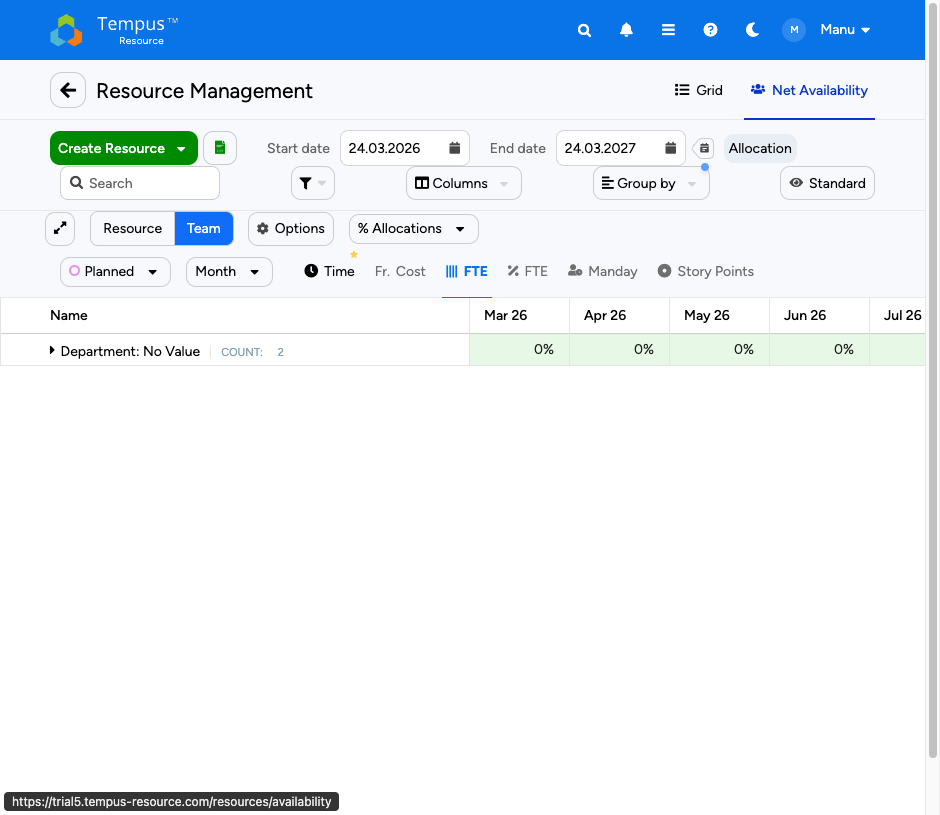
Alle Projekte und Ressourcen in einer editierbaren Tabelle. Heatmap zeigt wo es brennt. Notes geben Kontext. Quicklink direkt ins Projekt. Die meisten haben es täglich offen.
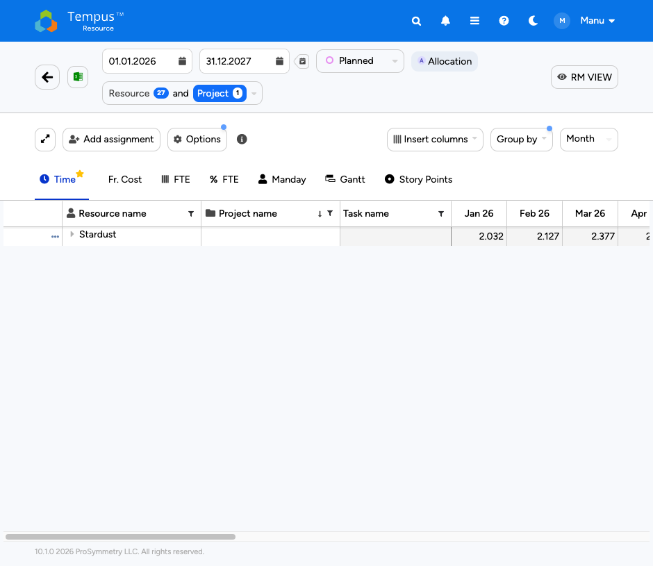
Reto zeigt seine gespeicherten Views: „Mein Team KW13", „Projekte Q2", „Überlastung IT". Jeder PM kann sich seine Sicht einrichten. Einmal konfiguriert — jeden Montag ein Klick.
Nicht jeder Stakeholder liest Zahlen-Grids. Tempus bietet eine Roadmap-Ansicht mit Gantt-Balken — perfekt für Steering Committees und Management-Updates. Projekte als Timeline, Meilensteine visuell.
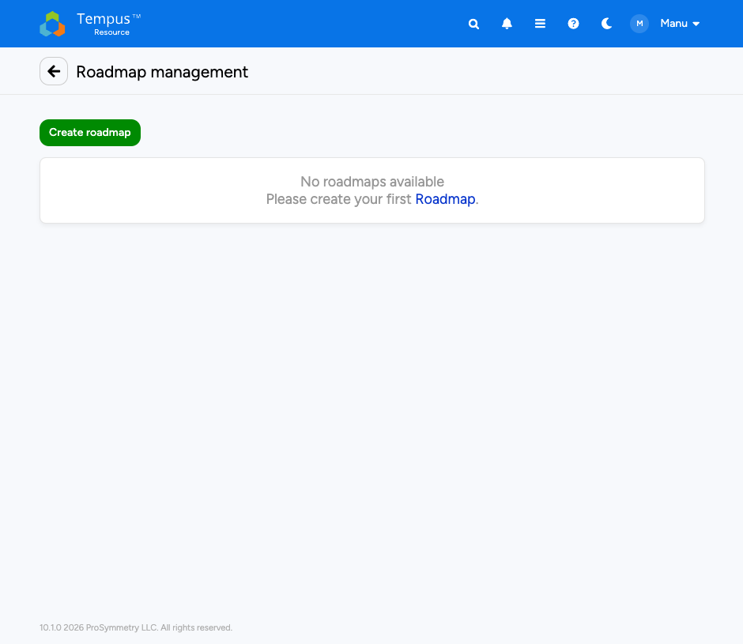
Reto öffnet Report Management. Sieben Berichtstypen, konfigurierbar in 30 Sekunden. Der Plan vs. Actual Report zeigt sofort wo ein Projekt vom Kurs abweicht — auf Task- und Ressourcenebene.
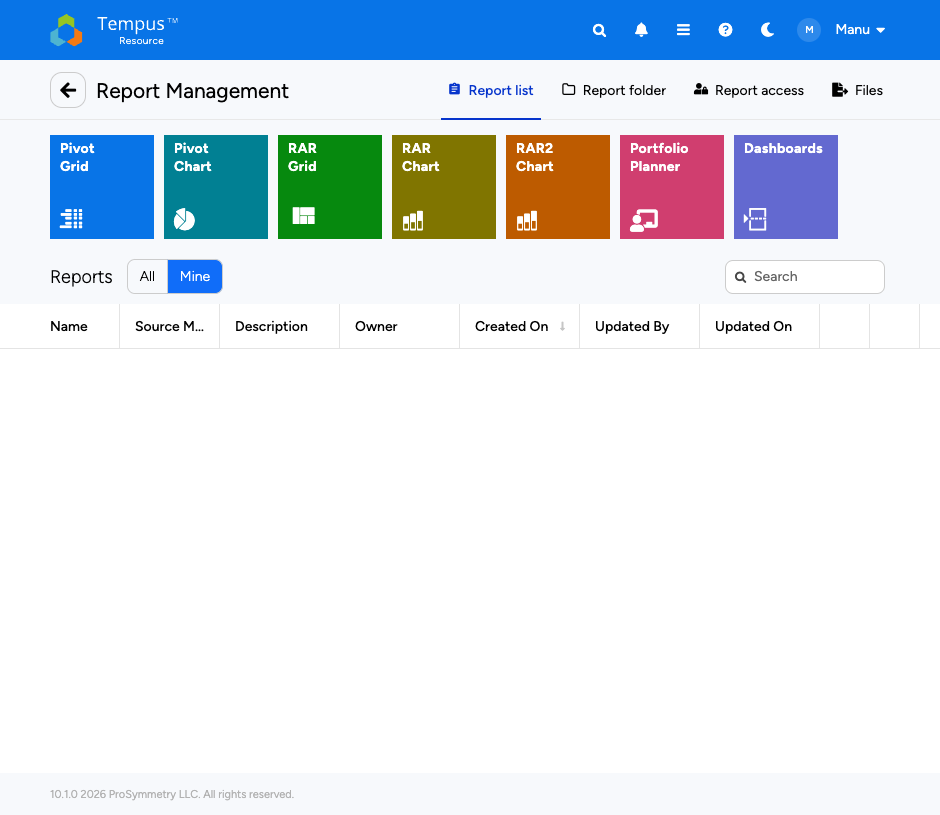
Der RAR2 Chart zeigt Marc mit 12h/Tag — rot. Stardust + Apollo gleichzeitig. Ein Report, der nicht nur die Zahlen zeigt, sondern die Geschichte dahinter.
Das Management will keine Detail-Grids. Es will wissen: Welche Projekte laufen? Wie steht das Budget? Wo gibt es Risiken? Strategic Portfolio liefert genau das — mit Kanban, Gantt und Budget-Widgets.
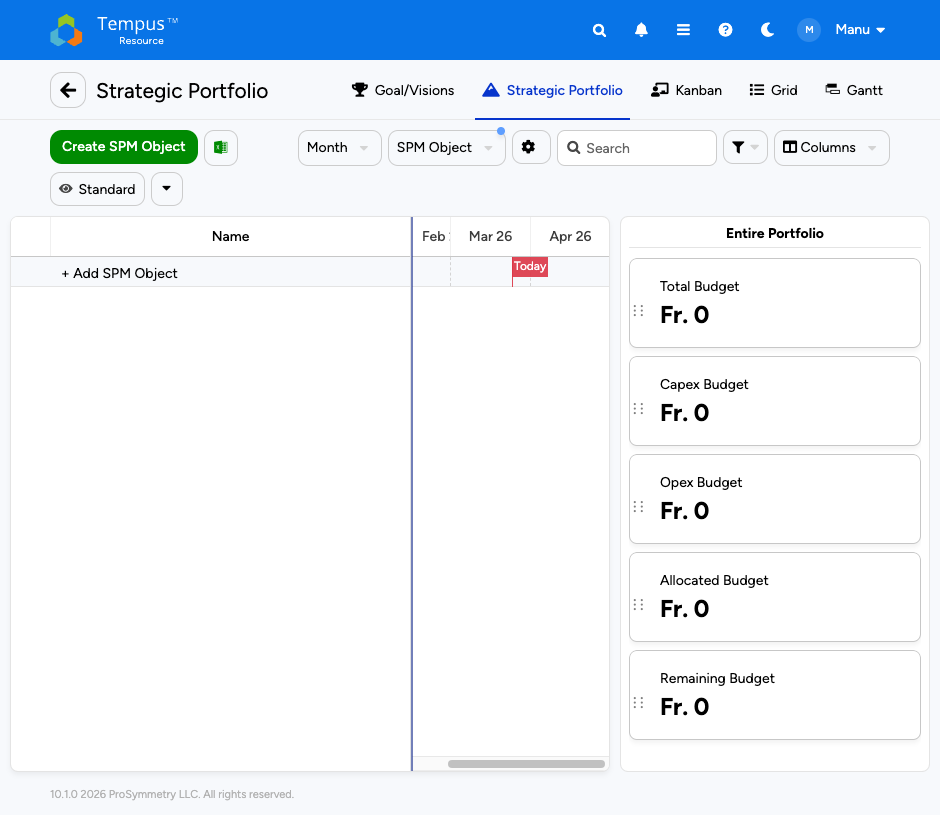
Peter lehnt sich zurück. Lange Pause.
Reto lacht. „Das habe ich mir gedacht."
Die Geschichte ist erzählt. Die Fragen sind beantwortet. Jetzt sind Sie dran.
Testen Sie Tempus selbst — oder lassen Sie sich von Reto durch Ihre Daten führen.